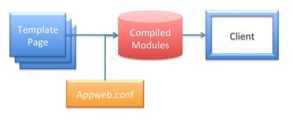
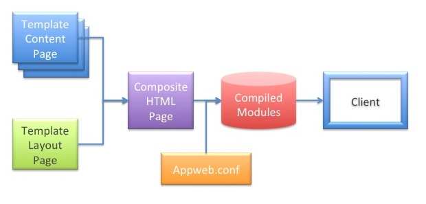

ESP Pages
ESP Pages are HTML pages with embedded "C" code that renders what is sent to the client at runtime. Whereas static HTML pages must be fixed at development time, ESP pages can generate HTML and data at runtime and on a per-user basis. ESP provides one of the easiest and most powerful web frameworks without compromising speed or memory footprint.
Embedded C Code
ESP pages are in essence, HTML pages with embedded "C" code. They are parsed into pure "C" code and then compiled into native machine binary for exceptionally fast execution.
<h1>Hello World</h1> <h2>Today is <%= mprGetDate(0); %></h2>
Why "C"?
Why "C" code, you may ask? Because "C" enables ESP to provide the ultimate in speed and efficiency. "C" is the fastest, closest to the hardware, language available. By using "C", invoking device APIs and other system APIs are easy, fast and compact. There is no translation or coupling required getting into and out of another language.
Transparent Compiling
However, ESP is not a traditional low-level environment. When a client request for an ESP page is received, the ESP page is transparently parsed, converted into "C" code, compiled and saved as a native code shared library. Once loaded, subsequent requests will use the in-memory code without any access to the original ESP page. If the system is rebooted, the on-disk cached module will be loaded without recompilation.
p> The compilation of ESP pages happens automatically and quickly in the background when in development mode. If the original web page is modified, the page is transparently recompiled and re-cached. For production, pages can be pre-compiled, and locked-down without recompiling in the field. This updating behavior can be controlled by the EspUpdate configuration directive.
Alternatively, ESP pages can be precompiled via the esp generator program. For example:
esp compile
In fact, the entire application can be compiled into a single combined module by compiling in combined mode. In this mode, all the ESP pages, controllers and source code can be compiled into a single, managable flexible library file.
Garbage Collection
ESP uses Garbage Collection for managing ESP and Appweb memory. This makes working with ESP pages and embedded "C" code simpler and more secure. Any memory allocated by Appweb or ESP APIs is automatically managed by the Appweb garbage collector. You do not need to free such memory. You can still use the normal malloc and free APIs if you wish. Just don't mix the two kinds of memory.
The use of garbage collection enables the use of decorator patterns and API chaining where the outputs of one function can be used as arguments to others. If you need to manually free memory, this style of programming is often quite difficult, ... but with ESP, it is much easier. For example:
Resource name: <%= mprJoinExt(mprJoinPath(dir, supper(name)), "jpg") %>
This joins the directory with an upper-case of "name" and appends a "jpg" extension if one is not already in the name. All allocated memory is automatically freed ensuring no memory leaks.
ESP Page Directives
ESP pages support a suite of page directives to control how embedded "C" code will be processed and at what scope in the generated page the code should be positioned. The following directives are provided:
| Directive | Purpose |
|---|---|
| <%@ include "file" %> | Include the named file at this location |
| <%@ layout "file" %> | Use the specified layout file for this page |
| <%@ content %> | Used in layout pages to specify where the content should be inserted |
| <%^ global ... | Specify that the code from this block must be at a "global" C scope. This is useful for global declarations, extern statements and #include statements. |
| <%^ start ... | Specify that the code from this block will be positioned at the start of the generated function for the template. This is useful for local variable declarations. |
| <%^ end ... | Specify that the code from this block will be positioned at the end of the generated function for the template. |
| <%= expression %> | "C" expression |
| <%= [%fmt] expression %> | Formatted "C" expression. The expression is passed through a "printf" style formatter. Use "%S" for HTML-escaped safe strings. |
| <% statements %> | "C" statements |
| <-%> | Trim the trailing newline for the generated block |
| @@variable | Request parameter or session variable. This is equivalent to "renderVar(variable)" |
| @!variable | C string variable |
| @#field | Record field variable. This is equivalent to "ediGetField(getRec(), field))" |
| @~ | Top level application URL. Use this to create relative URLs without having to hard code URI prefixes in your application. |
| @| | Top level server-side application URL. Use this to get the URI prefix for server-side controllers. |
<%@ include "file" %>
This directive can be used to include other HTML or ESP files at this location. The included contents will be parsed as an ESP page and the results substituted at this location. ESP include directives can be nested to an arbitrary depth.
<%@ layout "file" %>
The layout directive specifies the filename of the layout page to use. If set to the empty string "" then no layout page will be used. The default layout page is layouts/default.esp
<%@ content %>
This directive is used only in layout pages to specify where the content page should be inserted. There should be only one such directive in a layout page.
<%^ global ....
This directive specifies that the code from this block must be at a "global" C scope. This is useful for global declarations, extern statements and #include statements.
<%^ start ...
This directive specifies that the code from this block will be positioned at the start of the generated function for the template. Some "C" compilers do not allow variable declarations to be placed other than at the start of a block. So this directive is useful for local variable declarations.
<%^ end ...
This directive specifies that the code from this block will be positioned at the end of the generated function for the template.
<%= expression %>
Use this directive to embed the result of a "C" expression. The result must be a null-terminated string. This example below calls the mprGetDate function which returns the local date and time as a string.
Today is <%= mprGetDate(0); %><
<% statements %>
Use this directive to run "C" code statements. No value is substituted back into the page in place of the directive. If you need to write data inside a statement block, use the render API.
<%
for (i = 0; i < 10; i++) {
render("I is %d <br/>\n", i);
}
%>
Security Note: you should never use render to write back user data that has not been validated. If you must render user input data, use renderSafe which will escape any HTML sequences. This is essential to avoid XSS and other security issues.
You can also iterate over regular HTML code. The following code will display Hello World ten times in the web page.
<% for (i = 0; i < 10; i++) { %>
Hello World
<% } %>
@@variables
ESP provides a shorthand for accessing request parameters. Request parameters are a collection of query variables, posted form fields, routing tokens, session variables and any explicitly set parameters. These are stored in a params table and in session data stores and are accessible via the param, espGetParam and espGetSession APIs. However, the @@variable directive provides an easier way. With this directive, the params and session data are examined (in that order) for the given variable name.
In this example below if the URI: http://example.com/test.esp?name=John was used the following ESP template could be used to access the "name" query value.
<h2>My name is @@name</h2>
This directive is very useful for accessing any request, form, query or session data.
@!variables
ESP provides a shorthand for accessing C string variables inline.
<%^start
char *weather = "fine";
%>
<h2>Current weather is @!fine</h2>
This is equivalent to:
<%= fine %>
@#field
ESP provides a shorthand for accessing field data in the current database record. Controllers will often setup the environment for a view by defining a "current" database record. The @#field directive provides an easy way to access any field in the current record.
If a controller defined a current "user" record, this example below would extract the "name" field for display.
<h2>My name is @#name</h2>
Request Context
The full HTTP request context is provided by a set of objects. These include:
- Request Params — Request query and form data
- Session Data — Persistent session data saved across requests
- HttpConn — Connection object. Holds data pertaining to the socket connection.
- HttpRx — Receive object. Holds data pertaining to this HTTP request.
- HttpTx — Transmit object. Holds data pertaining to the response for this request.
- HttpHost — Host object. Holds data for the host/virtual host serving the request.
- HttpRoute — Route object. Holds details regarding the route managing the request.
- EspRoute — Additional ESP specific route state
- EspReq — Additional ESP specific request state
The Rx, Tx, Host, Route, EspRoute and EspReq objects are all addressable from the HttpConn object. Here is a collection of especially useful context items:
| getConn() | Get the current HttpConn object. Can be used inside controllers and template web pages |
| conn->rx | Request object |
| conn->tx | Transmit object |
| conn->host | Host object |
| conn->rx->route | Route object |
| conn->rx->route->eroute | ESP Extended Route object |
| rx->method | HTTP method string |
| rx->uri | Request URI |
| rx->pathInfo | Request path information after the scriptName |
| rx->scriptName | Script name portion of the request URI |
| tx->filename | Resource filename being served |
| tx->ext | Resource filename extension |
| tx->finalized | Set if response output has been completed |
| route->documents | Document root directory for the route |
| route->home | Route home directory |
See the Native APIs document for more details about the available APIs. See the ESP Generator documentation for full details.
Common Tasks
Writing Data
ESP provides a set of rendering APIs to send formatted and unformatted data in the response. The most common is render which uses printf style formatting before sending the data to the client. For example:
render("Today, the temp is %d", temp);
Other useful render routines include:
- renderSafe which HTML escapes the data for unsafe characters. This is useful to minimize the risk of cross-site scripting vulnerabilities.
- renderFile to send the contents of a file back to the client.
- sendGrid to send a database table grid as JSON.
- sendRec to send a database record as JSON.
- sendResult to send a status result with feedback as JSON.
Redirecting
To redirect the client to a new URL, use the redirect API. For example:
redirect("checkout.html");
For more control over the HTTP status code, use espRedirect API. For example:
espRedirect(getConn(), 302, "checkout.html");
Setting the HTTP Response Code
Use the setStatus API to set the HTTP status response code. For example:
setStatus(404); /* Not found */
Adding a HTTP Header
To add a custom HTTP response header, use the setHeader API. For example:
setHeader("X-ACCESS_CODE", "42");
Layout Pages
Highly usable applications have consistent structure, menus and appearance so the user can easily navigate that application. Such applications may consist of many web pages that share a common look and feel. However, designing and maintaining that consistency is sometimes a challenge.
ESP provide a powerful and flexible solution for implementing a consistent UI via layout pages. that define the look and feel of an application. Content pages are then rendered to clients by merging specific content with one or more layout pages. This creates a composite page that is what the user will actually see. In this way, a web application can easily maintain a consistent look and feel without repeating boilerplate code from page to page. ESP believes strongly in the DRY principle: "Don't Repeat Yourself".
For example: if the page below is a layout page called "layouts/default.esp", it will define the top level HTML content for content pages. It has a banner image and division tags that structure the page:
<html>
<body>
<div class="top">
<img src="banner.jpg" />
</div>
<div class="content">
<%@ content %>
</div>
</body>
</html>
Modifications to this page, will be reflected automatically in all content pages.
Content Pages
A content page defines only the HTML and code that is unique for a specific page. It is merged with a layout page by inserting the content and replacing the <%@ content %> tag in the layout page before rendering to the client.
For example, consider the content page named "views/demo-index.esp":
<h1>Content Page</h1> <p>Hello World</p>
This would render a composite web page back to the user:
<html>
<body>
<div class="top">
<img src="banner.jpg" />
</div>
<div class="content">
<h1>Content Page</h1>
<p>Hello World</p>
</div>
</body>
</html>
Note that the blending of layout and content page happens only once and the result is compiled and saved for subsequent requests. If either the layout or content page is modified, the page will be recompiled.
Alternate Layout Pages
ESP pages that are part of an ESP MVC application use the layout page layouts/default.esp by default. However, a content page can request a specific layout page by using the <%@ layout "file"> directive.
<%@ layout "alternateLayout.esp"> <h1>Content Page</h1> <p>Hello World</p>
This instructs the templating engine to use the "alternateLayout.esp" file rather than the default layout. The default layout page is called "layouts/default.esp".
Stand-alone ESP pages that are not a part of an ESP MVC application do NOT use layouts by default. If you want a stand-alone ESP page to use a layout page, use the layout directive to specify the required layout page.
Multiple Layout Pages
You are not restricted to a simple two level layout and content page scheme. A layout page can itself refer to another layout page to gradually build up the application's look and feel. To do this, the layout page needs to include an explicit <%@ layout "file"> directive.
Include Pages
Sometimes you need to just include some arbitrary HTML file at any point in a page. Use the include directive at any point in the page you wish to include another file. For example:
<%@ include "common/header.html" %>
Debugging
You can inject debugging code into your views to trace data to the appweb log file or back to the client's browser. The mprLog function will print its arguments to appweb log file.
To send trace to the browser, use the render function to write data back to the browser.